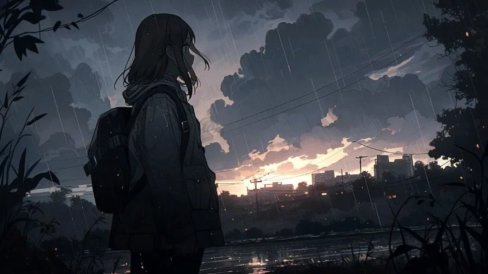

When has humanity as a whole, become so dull? When I was younger, before my BPD really showed, people weren't performing, nor posing. They were authentic, true to their core. But now, it's as if performative masks, posers, copy-cats are everywhere... For example: I watched anime since 2013/2014... And in those years I was ridiculed, degraded, and treated as if I was "gay" for liking or watching it. Now after the 2018 "Great Wave" or better yet the 2020 wave that came after, those same people now like anime and have forgotten, no surprise here, the ways they used to treat me and others. They even try to compete with it "Aha I watched X as it came out, so I watched it before You!" as if I was even, competing with my own hobbies, likes, and interests? More examples can be made for xxx, lil peep, $b, and others. As for peep, whenever I spot a poser, I just send them "Never Alone"... This scene was never meant to be trendy or performative. On one side it was an escape from reality with something not white-washed by western media practices. On another, it was just us kids telling other kids not to be suicidal... Now it's been a trend? What the fuck? I can name so many, ex-friends, and family alike that think "They're in" the "scene", while not having 0.1th of a scar. They think they're in just because they know someone/can get an 8ball... Okay? I can order, right now with monero, KILOS. Fuck off! Performative masks are so,,, normal and that in my eyes is why some of us pre-2018 ejected from society/preferred the internet + east asian culture, as it was more Authentic, raw, and Human. These same groups now throw around the most racist sayings as if some badge of honor. "Teehee I'm a gamer, I'm supposed to be known for being racist" yeah, blue collars that got home from their Warehouse or Construction job, threw those around back in the day in COD and xbox party chats. What, you think you're apart of 4chins shock culture, while never have of visited the site? It gives me a headache... I just miss 2015 and I want to go back to anticipating the release Steins;Gate and then Fawning over Makise... Simpler, Kinder, times. You go you! Go conquer yourself right out of your own Soul. Were we ever truly authentic, or just early to the performance before the crowd caught up?
